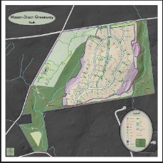
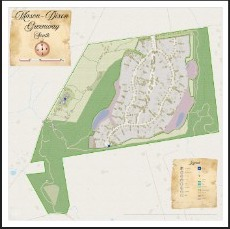
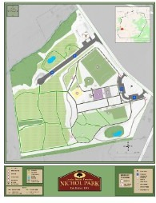
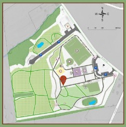
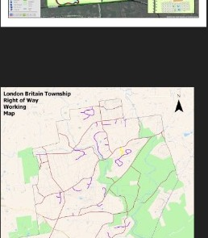
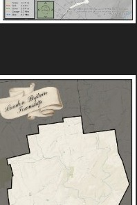
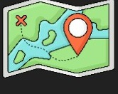

Web Services & Database Management
Design and maintain GIS databases; host data and design online maps; integrate GPS, survey, and public datasets including NHD, parcels, and aerial imagery. Digitizing of historic maps and CAD drawings.
GIS ANALYST • CARTOGRAPHER
Custom cartography, GIS database design, environmental and hydrologic analysis, web mapping, GPS field work, and conservation-focused mapping.
CARTOGRAPHY
A selection of environmental, recreation, municipal, planning, and community maps.






GIS SERVICES
Design and maintain GIS databases; host data and design online maps; integrate GPS, survey, and public datasets including NHD, parcels, and aerial imagery. Digitizing of historic maps and CAD drawings.
Surface raster modeling including flow direction, accumulation, and drainage paths. Wetland, pond, and sub-basin analysis, plus contaminant plume mapping.

Custom map design for reports, presentations, and public engagement. Atlas creation and thematic mapping for environmental, land-use, and hydrologic projects.
High-accuracy GPS collection and field mapping to support inventories, planning, environmental work, and asset documentation.
Open space and park mapping, historic resource imagery, and support for municipal, recreation, and conservation planning projects.
AVAILABLE FOR PROJECT WORK
CONTACT
For cartography, GIS analysis, environmental mapping, web GIS, or municipal support, send a short description of the project and what you need the finished product to do.
Mhanley.cartography@gmail.com